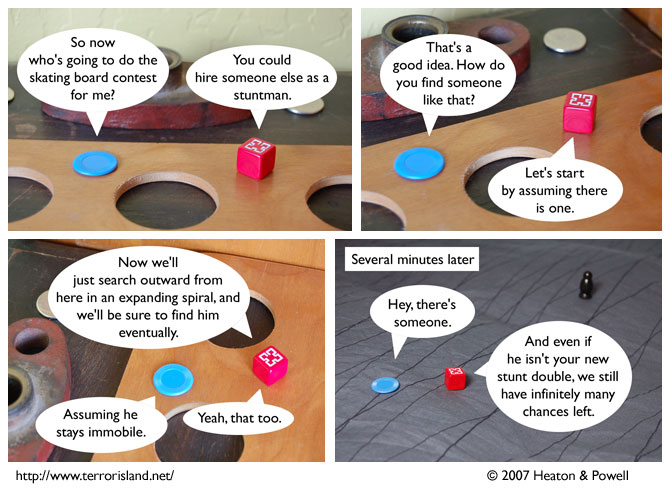

Strip #231
— Monday, December 3, 2007
In real life, you’d probably use craigslist instead.
Notes, Thoughts, &c.
Ben’s Notes
The spiral method actually works. I don’t know why people always object when I suggest it to them.
Lewis’s Notes
This strip is based on a real experience Ben and I had driving with our friend Reid. Reid was driving, and we were lost in downtown Rochester, looking for the bus station, I think. Reid, as it turns out, was not as enamored of the advice, “search outward from here in an expanding spiral” as Jame appears to be, despite the fact that the bus station would eventually have been found by that method.